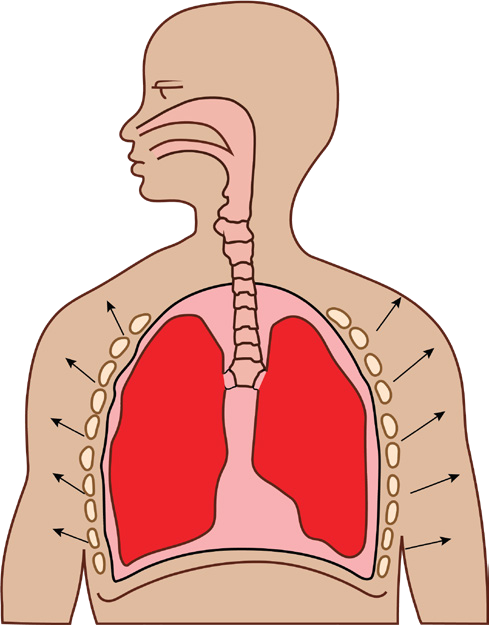
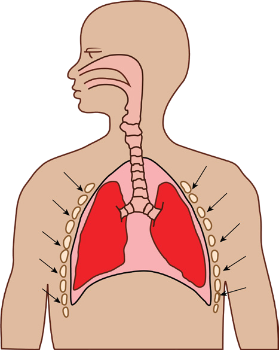

132
Student’s Book - Form Two
Biology for Secondary Schools
the external intercostal muscles contract
while the internal intercostal muscles
relax and pull the rib cage upward and outward, as shown in Figure 6.2. These movements result to an increase in the volume and decrease in the air pressure
of the thorax. This process makes air
flow into the lungs through the nostrils,
trachea, bronchus, bronchioles, and
alveoli.

Ribs
Lung
Diaphragm
Ribs move outward
Air inhaled
Figure 6.2: Inhalation
Exhalation
Exhalation helps to remove carbon dioxide gas from the body. Carbon dioxide is a cellular waste product.
During exhalation, the muscles of the diaphragm relax and the diaphragm resumes its dome shape, as shown in
Figure 6.3. The external intercostal
muscles relax while the internal intercostal muscles contract, pulling the ribcage inward and downward.
As a result, the volume of the thorax decreases and the pressure inside it increases. This forces air out through the bronchioles, bronchus, trachea, and nostrils.

Ribs
Lung
Diaphragm
Ribs move inward
Air exhaled
Figure 6.3: Exhalation
Differences between inhalation and exhalation
The
processes
of
inhaling
and
exhaling gases in human beings can be differentiated based on the changes that occur in the parts of the respiratory system such as the ribs, intercostal muscles, and diaphragm. Table 6.4 summarises the differences between inhalation and exhalation.
08/04/2026 10:18:35